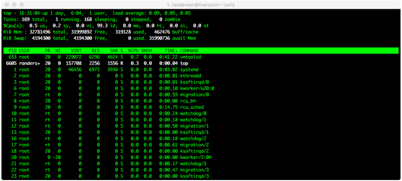

Week 2: Introduction to Unix/Linux and the Server; Assembly with IDBA-UD; ORF Calling and Annotation with Prokka¶
Rika Anderson, Carleton College
As you work through lab this week and for all subsequent weeks: Questions? Problems? Running into errors? Post on the lab Slack. I’ll be monitoring the Slack during the weekly lab sessions (and outside of those times as well, though I can’t always guarantee a rapid response.) It’s easiest to answer your questions if you post a thorough explanation of exactly what command you ran and exactly what error message you’re getting. Please feel free to answer others’ questions too– some of you may run into the same problems.
Connecting to baross¶
1. About baross¶
We are going to do most of our computational work on a remote server (or computer) called baross, which is a remote server with 96 CPUs, 50 TB of storage, and 768 GB RAM. baross lives in the basement of the CMC. You can access it from lab computers on campus, and you can also access it from your own computer at home. First, you have to learn how to access baross.
If you are in a computer lab on the Carleton campus: Boot as a Mac user on the lab computer.
If you are working on a personal Mac computer: You should be able to follow the directions below.
If you are working on a personal computer that is operating Windows or another OS: You will need to find a way to connect to a remote server. I recommend installing a Ubuntu terminal. If that doesn’t work, you can use PuTTY. (This was included in last week’s pre-lab prep.)
2. Opening Terminal¶
If you’re on a Mac, find and open the Terminal application (it should be in “Applications” in the folder called “Utilities”). If you’re on a PC or other OS, open the window you’ll use to ssh into a remote server (like Ubuntu or PuTTY or something similar).
The terminal is the interface you will use to log in to the remote server for the rest of the course. It is also the interface we will be using to run almost all of the bioinformatics software we will be learning in this course. You can navigate through files on the server or on your computer, copy, move, and create files, and run programs using the Unix commands we learned earlier this week.
3. ssh¶
We will use something called ssh, or a secure socket shell, to remotely connect to another computer (in this case it will our class server, baross). Type the following (substituting username with your own Carleton username– the same name as your email address):
ssh username@baross.its.carleton.edu
4. ssh (cont.)¶
You should see something like this: [your username]@baross.its.carleton.edu's password:
Type in your Carleton password. NOTE!! You will not see the cursor moving when you type your password. Never fear, it is still registering what you type. Be sure to use the correct capitalization and be wary of typos.
5. pwd¶
Whenever you ssh in to baross, you end up in your own home directory. Each of you has your own home directory on baross. To see where you are, print your current working directory.
# How to print your working directory (find out where you are in the system)
pwd
6. Your path¶
You should see something like this: /Accounts/[your username]
This tells you what your current location is within baross, also known as your path. But before we actually run any processes, we need to learn a few important things about using a remote shared server.
Important things to know about when using a remote shared server
7. top¶
One of the most important things to learn when using a remote shared server is how to use proper server etiquette. You don’t want to be a computer hog and take up all of the available processing power. Nobody earns friends that way. Similarly, if it looks like someone else is running a computationally intensive process, you might want to wait until theirs is done before starting your own, because running two intensive processes at the same time might slow you both down.
To see what other processes are being run by other users of the same server, type: top
You should see something like this:

Here, we can see that randerson is the only user on baross, I am using a process called top, and it’s taking up 0.3% of one central processing unit (CPU), and zero memory. Not much is going on in this case. (All the other things listed under ‘root’ are processes that the computer is running in the background.) If someone’s process says 100.0 or 98.00 under %CPU, it means they’re using almost one entire CPU. baross has 96 CPUs and 768 gigabytes of RAM total. This is also my research server, so please be courteous and leave some CPUs for my research students. A good rule of thumb is to try to leave at least 15 CPUs available at any given time. If we try to overload the computer, it means that everyone else’s processes will have to be shared among the available CPUs, which will slow everyone down. For example, if it looks like 80 CPUs are already being used at a particular time, you might want to wait until later to run your own process.
To quit out of top, type: q
8. screen¶
Sometimes we will run processes that are so computationally demanding that they will run for several hours or overnight. Some processes can sometimes take several days, or even weeks. In order to run these processes, you want to be able to close out your session on the remote server without terminating your process. To do that, you use screen. Type: screen -S test
Your terminal will open a clean window. You are now in a screen session that you have called ‘test’. Any processes you start while you are in a screen session will continue running even after you log off of the remote server.
Let’s say you’ve typed the commands for a process, and now you’re ready to exit your screen session to let it run while you do other things. To leave the screen session, type: Control+A d
This will “detach” you from the screen session and allow you to do other things. Your screen session is still running in the background.
To resume your screen session to check on things, type: screen -r test. (Now you’ve re-entered your screen session called ‘test.’)
To kill your screen session (this is important to tidy up and keep things neat when your process is finished!) type: Control+A k.
- The computer will say:
Really kill this window [y/n]. You type:y. - If this doesn’t work, you can also type
exitto terminate the screen session.
Creating an assembly and evaluating it (toy dataset)¶
9. mkdir¶
Let’s say we’ve gone out in to the field and taken our samples, we’ve extracted the DNA, and we’ve sent them to a sequencer. Then we get back the raw sequencing reads. One of the first things we have to do is assemble them. To do that, we’re going to use a software package called IDBA-UD. Bioinformaticians love to debate about which assembler is best, but ultimately it usually depends on the nature of your own dataset. If you find yourself with data like this someday and you want to know which assembler to use, my advice is to try a bunch of them and then compare the results using something like Quast, which we’ll test below. For now, we’re going to use IDBA-UD, which I’ve found to be a good general-purpose assembler.
Make a new directory in your home folder:
mkdir toy_dataset_directory
11. Copy toy dataset¶
Copy the toy dataset into your assembly directory. Don’t forget the period at the end! This means you are copying into the directory you are currently in.
cp /usr/local/data/toy_datasets/toy_dataset_reads.fasta .
12. Run idba-ud on toy dataset¶
Run idba-ud on the toy dataset. Here is what these commands mean:
- Invoke the program
idba-ud - The
-rgives it the “path” (directions) to the reads for your toy dataset.../means it is in the directory outside of the one you’re in. - The
-oflag tells the program that you want the output directory to be called “toy_assembly”
idba_ud -r toy_dataset_reads.fasta -o toy_assembly
13. cd to output directory¶
When that’s done running, go into your new output directory and take a look at what’s inside:
cd toy_assembly
ls
14. The output files¶
You should see several files, including these:
contig.fa
contig-20.fa
contig-40.fa
contig-60.fa
contig-80.fa
contig-100.fa
scaffold.fa
Next week, we will talk more about how assembly works. Briefly, De Bruijn graph assembly works by searching reads for overlapping words, or “kmers.” IDBA-UD starts by searching for small kmers in the short reads to assemble those short reads into longer contigs. Then it uses those constructed contigs for a new round of assembly with longer kmers. Then it does the same with even longer kmers. It iterates through kmers of length 20, 40, 60, 80, and 100. You should get longer and longer contigs each time. Each “contig-” file gives the results of each iteration for a different kmer size. The “scaffolds.fa” file provides the final scaffolded assembly, which pulls contigs together using the paired-end data.
15. Examine output¶
Let’s examine the assembly output files. First, take a look at your final scaffold output:
less scaffold.fa
16. Fasta file¶
You should see a fasta file with some very long sequences in it. When you’re done looking at it, type: q.
17. Evaluate assembly quality¶
Now we’re going to evaluate the quality of our assembly. One measure of assembly quality is N50, which is the contig length for which the collection of all contigs of that length or longer contains at least 50% of the sum of the lengths of all contigs. We could theoretically calculate the N50 by hand, but often times you’ll get many, many contigs and it’s very tedious to do by hand. So we will use an assembly evaluator called Quast. Run it on your toy dataset. (Note that the command is kind of long, so scroll right in the little green box below.)
quast.py contig-20.fa contig-40.fa contig-60.fa contig-80.fa contig-100.fa scaffold.fa –o toy_assembly_quast_evaluation
Here is what the commands mean:
- Invoke the program
quast.py - We tell it to run the program on all of the output files of your toy assembly. Every fasta file that we list after
quast.pywill be included in the analysis. - The
-oflag will create an output directory that we will calltoy_assembly_quast_evaluation
18. View output by copying to your local computer¶
Quast gives you some nice visual outputs, but it’s easier to look at these if you copy them from the server to your local computer. For this, we will use scp, or ‘secure copy.’ It’s a lot like cp, except that you’re copying from a remote server to your own computer. We will use scp -r because we’re copying a directory recursively, not just a file.
- Open up another Terminal window on your own computer. Navigate to your home directory.
cd ~
- Type this (substituting your own username below):
scp -r username@baross.its.carleton.edu:~/toy_dataset_directory/toy_assembly_quast_evaluation .
That means: copy something from the remote server baross and put it right here on my local computer.
- In your newly copied folder, double-click on the file called “report.html” and take a look. It reports the number of contigs, the contig lengths, the N50, and other statistics for each of the assembly files you entered. The graph at the bottom shows the cumulative length of your assembly (y-axis) as you add up each contig in your assembly (x-axis). Think about what the variables mean, and how the trends change with each iteration of the assembly. We’ll talk about this more in class, but for now, please keep a copy of the report.html somewhere and we’ll refer back to it when we cover assembly in class next week.
19. Bookkeeping¶
For the sake of future bookkeeping, you’ll need to modify your scaffold assembly file so that another software program we will use in the future (called anvi’o) is happy. (Spaces and other weird characters are so tricky sometimes.) This will be very important for your project datasets as well. Do this while you are inside the directory with your assembly files:
anvi-script-reformat-fasta scaffold.fa -o toy_dataset_assembled_reformatted.fa -l 0 --simplify-names
Create and evaluate assembly (project dataset)¶
You’re now going to run an assembly on your project dataset. Before we start working on your project datasets, I encourage you all to start a computational lab notebook. I recommend that you open a text document in BBEdit or a similar text editor and save it on the cloud somewhere. In that notebook, it will be crucial that you keep a record of all the commands you run, especially for your project datasets. That way, if you get a funny result, or if you want to repeat an analysis, you can always go back to your lab notebook to see exactly what command you ran. In my own computational lab notebook, I record the dates and I include notes to myself about the analysis, or observations of the graphs I make. I recommend using a text document (like in BBEdit) rather than Word or Google Docs because you can copy-paste Unix commands from a text editor without worrying about formatting. These notebooks are just for you– I won’t be checking them– but now that we’re about to get into the real analysis, you should start one for your project datasets and maintain them throughout the rest of this course.
20. screen¶
Since the assembly will take about 10-20 minutes, I recommend running this on screen. Type:
screen -S assembly
21. Make and change directories¶
Make a new directory in your home folder called “project_directory,” and then change directory into your newly created directory:
cd ~
mkdir project_directory
cd project_directory
22. Copy project dataset¶
Next, copy your project dataset in to that directory. Your assigned project dataset is listed in an Excel file that is on Moodle.
For example, if you have dataset ERR590988 from the Arabian Sea, you would do this:
cp /usr/local/data/Tara_datasets/Arabian_Sea/ERR598966_sample.fasta .
23. Start assembly¶
Next, start your assembly. Substitute the name of your own sample dataset for the dataset shown here.
idba_ud -r ERR598966_sample.fasta -o ERR598966_assembly
24. Detach from screen¶
After you’ve started the process, detach from screen:
Ctrl+A d
These assemblies will likely take some time. You can move on to the next steps (“Searching for and annotating open reading frames”) while this runs, and then come back to this when it’s done.
To check on the progress of your assemblies, you can either use top to see if your assembly is still running, or you can re-attach to your screen using the instructions above.
Searching for and annotating open reading frames¶
Now that we have assembled our contigs, we want to find genes on them. That requires identifying open reading frames (ORFs), and then comparing the ORF sequences with existing databases to see if we can figure out what kinds of genes they are. There are lots of programs to identify and annotate ORFs. We’re going to use a program called Prokka, which wraps a bunch of different software into a pipeline that is nice and streamlined. Prokka basically does three things:
- Identify ORFs
- Compare those ORFs to databases of known genes to find the closest match and assign their putative functions
- Several other things (like finding rRNA or tRNA genes, CRISPRs, etc.) that we aren’t going to worry about right now.
Prokka works well and it’s free, so we’re using it today. It tends to work best for archaeal and bacterial genomes. If you want to identify and annotate ORFs for eukaryotic genomes, there’s lots of similar software out there to do that.
Go to your toy dataset directory and make a new directory:
cd ~/toy_dataset_directory
mkdir ORF_finding
cd ORF_finding
25. Run Prokka¶
Now run Prokka on your toy assembly, which is located in the toy_assembly folder:
prokka ../toy_assembly/toy_dataset_assembly_reformatted.fa --outdir prokka_toy
This means you’re invoking prokka on your reformatted toy dataset assembly, and you’re putting it in a new directory called prokka_toy.
26. View output in FASTA format¶
You should see a directory called prokka_toy. Use cd to go into that folder, then use the program less to look at PROKKA_09252018.faa (or something like that– adjust according the date). You should see a fasta file with amino acid sequences. Each amino acid sequence is an open reading frame (ORF), or a putative gene that has been identified from your assembly.
The cool thing is that Prokka has also annotated your genes with their putative function. You can see that in each sequence title, which provides the name of the sequence assigned by Prokka (e.g. KGLPOPID_00002) and the putative function (e.g. Proine/betaine transporter). A lot of them will say hypothetical protein, which simply means that Prokka couldn’t find a good match for that protein in public databases.
Note that the file that ends in .ffn contains the same thing, except the ORF sequences are in nucleotide format, not amino acid.
27. View output in Genbank (gbk) format¶
Prokka is handy because it gives you output in all kinds of formats, which you could use for other downstream applications. For example, it gives you a Genbank output, which is commonly used in the National Institute of Health (NIH) National Centers for Biotechnology Information (NCBI) database, which we’ll be using a lot over the next few weeks. Take a look:
less PROKKA_09252018.gbk
For each contig, the Genbank file will give you information like the name of the contig, its length, the organism it comes from, and then information about every ORF or coding sequence (abbreviated as CDS) that contig. This includes the gene name, the location, the translation table (some organisms use slightly different codons and therefore different translation tables), its product, and its amino acid sequence. At the end of the list of ORFs for each contig, it gives you the DNA sequence of the contig.
28. View output in tab-separated column (tsv) format¶
Let’s look at one last output format, which is in tab-separated columns, and therefore best visualized in a spreadsheet application like Excel. Use scp to copy this file from the server to your own computer. Remember, type this into a Terminal window that is NOT logged on to the server.
scp username@baross.its.carleton.edu:~/toy_dataset_directory/ORF_finding/prokka_toy/PROKKA_09252018.tsv .
29. Open tsv file¶
Find your file on your local computer, and open your .tsv file in Excel (or Google Sheets). The column headers are in columns as follows, left to right:
locus_tag: the name that Prokka assigned the ORFftype(feature type): whether the thing it found is an ORF (CDS) or a tRNA or rRNA gene or something else.length_bp: length of the genegene: if there was a match to an identified gene, it will give the name of that gene.EC_number: the Enzyme Commission assigns numbers to known genes according to their function. If there was a match to a known gene with an EC number, that is given here.COG: the Clusters of Orthologous Groups (COG) database groups proteins into categories of known function. If your ORF matched a specific COG, that is listed here. There is a website describing all of the COGS here.product: The putative annotation for your ORF.
Annotate your own project datasets¶
Now that you have the general lay of the land, you’re now going to annotate your own project dataset assemblies using Prokka.
30. Check on your project assemblies¶
Hopefully your project assemblies are done by now. Log back into your screen session (screen -r assembly). When IDBA-UD finishes, it will say:
invalid insert distance
Segmentation fault
This is because we gave IDBA-UD single-end reads instead of paired-end reads. Never fear! Despite appearances, your assembly actually did finish. However, the use of single-end reads instead of paired-end reads means that your assemblies will NOT have scaffolds, because we couldn’t take advantage of the paired-end data to make scaffolds. So, your final assembly is just the final contig file from the longest kmer, called contig-100.fa.
31. Rename assembly¶
When your project assembly is done, change the name of your final assembly from contig-100.fa to a name that starts with your dataset number, followed by _assembly.fasta. For example, you might call it something like ERR598966_assembly.fasta.
This way we will have standardized names and save ourselves future heartache. While in your project_directory, type:
mv ERR598966_assembly/contig-100.fa ERR598966_assembly.fasta
(You learned how to do this already– see your Unix cheat sheet.)
32. Run anvi-script-reformat-fasta¶
Run anvi-script-reformat-fasta on your completed project assemblies (see step 19 above). For example:
anvi-script-reformat-fasta ERR598966_assembly.fasta -o ERR598966_assembly_reformatted.fa -l 0 --simplify-names
34. Run Prokka on your project dataset¶
If you aren’t in your project directory right now, move into it and start prokka. Remember that you’re still in screen. This shouldn’t take too long, but if you log out of screen, don’t forget to re-enter and then terminate the screen session!
cd ~/project_directory
screen
prokka [your assembly reformatted] --outdir prokka_project
Ctrl+A d
Playing with “big data”¶
Congratulations! You now have annotations for your entire project dataset. This means you have annotations for thousands of genes in your dataset. Feeling overwhelmed? Feeling excited about the endless possibilities? Feeling hungry for some questionable yet tasty LDC food? If it’s one of the first two– welcome to big data! If it’s the last one, maybe lab has gone on for too long.
We’re almost done. But first we’re going to see an example of how we might analyze this kind of data.
36. COG categories¶
First, there’s a text file on the server that assigns every single COG in the COG database to a specific gene category, like Translation, ribosomal structure, and biogenesis. You can see it by typing this:
less /usr/local/data/Python_scripts/COG_numbers_categories_annotations.txt
37. Getting COG categories of your genes¶
Let’s say you want to know how many of the genes in your dataset are responsible for translation, how many are for energy metabolism, how many are viruses, etc. Fortunately, there is a magic script available for you to do that on the server. Change directories into wherever your Prokka results are and type this:
get_ORF_COG_categories.py [name of your Prokka tsv file]
And voilà! You’ll get a new file that ends in _cog_categories.txt with a list of all the different COG categories and the number of genes that fall into that category. Some of the COGs fall into multiple categories, denoted with, for example, Signal_transduction_mechanisms/Transcription. Imagine the possibilities! You can investigate so many questions about gene function in your dataset!
39. Exit¶
If you haven’t killed your screen yet, you should do so. As you did above, while in your screen session, type:
Ctrl A and then k. The the computer will say: Really kill this window [y/n]. You type: y.
When you are all done with your work on the server, you can log off the server by typing:
exit
Lab assignment this week¶
Write a mini research question about the COG categories you got from your ORF annotations. You can compare your sample to someone else’s. For example, you might ask, “Is there a difference in the number of genes related to the mobilome/prophage in the surface ocean compared to the mesopelagic zone?” Make an Excel bar plot based on your COG category results that demonstrates the answer to your question. Briefly explain your results and speculate as to why your results look they way they do. You should cite at least one paper from the literature that is relevant to your results. Submit this on Moodle by lab time next week.
I prefer to grade these blind, so please put your student ID number, rather than your name, on your assignment. (This applies to all future assignments as well.)